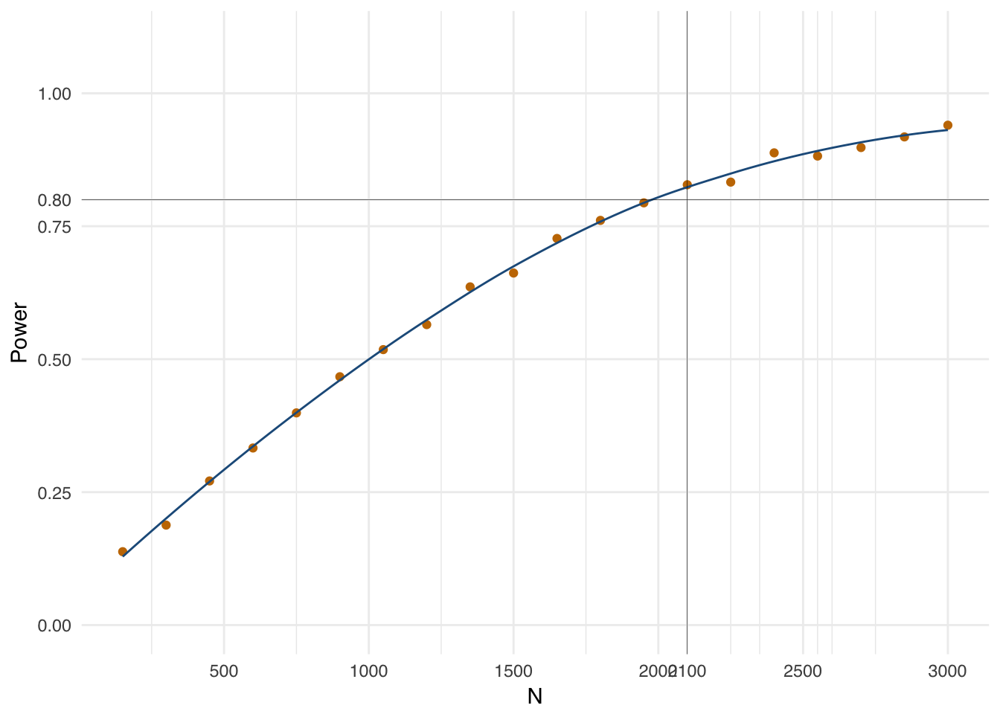

Often we wish to know whether the effect of some causal factor increases or decreases in the presence of another causal factor. For example, when seeking to increase voter turnout, is the effect of phone calls larger or smaller when voters have already received mail bearing the same message? If the message is made more convincing through repetition then we may expect phone calls increase turnout more effectively when voters have already received mail. However, a phone call might also be less effective when someone has already received mail, because the person becomes over-saturated with messages (Green, McGrath, and Aronow (2013)).
When the effect of \(A\) is bigger in the presence of \(B\) we call this a positive interaction, and when it is smaller in the presence of \(B\) we call it a negative interaction. Note that the direction of the interaction depends on the difference in the effects. Suppose, for example, that the effect of \(A\) when \(B\) is absent is -10 and when \(B\) is present it is -7. Even though these effects are negative, the interaction is positive because the presence of \(B\) increases the effect of \(A\) by 3.
The most straightforward way to investigate interactions is through the two-way factorial design. Participants in a study are assigned – usually in equal proportions – to one of four conditions: 1) neither \(A\) nor \(B\); 2) \(A\) only; 3) \(B\) only; or, 4) both \(A\) and \(B\). Those assigned to condition 1 don’t receive any effects, those assigned to 2 experience the effects of \(A\) only, those assigned to 3 receive the effects of \(B\) only, and those assigned to 4 receive both the effects of \(A\) and \(B\), as well as whatever extra effect the combination of \(A\) and \(B\) produce (the interaction). To isolate the interaction, we must firstly use the groups 1 and 2 to estimate the ‘pure’ effect of \(A\) and groups 1 and 3 to estimate the ‘pure’ effect of \(B\). When we subtract these two estimates from group 4, we are left with the interaction.
As may be clear from this description, however, estimating all of these quantities at once requires a lot of data to achieve statistical precision. Exactly how big does a researcher’s design have to be in order to have at least 80% probability of rejecting the null hypothesis of no effect for a given effect size? This is a surprisingly difficult question to answer, because answering it accurately depends upon the specific model of the potential outcomes the researcher has in mind. As a result, many researchers use rules of thumb that may lead to systematic over- or under-confidence. Using the MIDA framework and design simulation, however, we can provide a flexible answer to this question that does not rely on rules of thumb.
Model:
We specify a population of \(N\) study participants, each of whom has four potential outcomes corresponding to the 4 conditions to which they could be assigned, as enumerated previously. When they are in the first condition, their outcome \(Y_0\) is standard normally distributed baseline noise. In the second, the potential outcome \(Y_A\) is their baseline plus the effect of \(A\), and in the third \(Y_B\) is their baseline plus the effect of \(B\). In the fourth condition they reveal the potential outcome \(Y_{AB}\), receiving the \(A\) and \(B\) effects, as well as the supplementary effect produced by the combination of \(A\) and \(B\) – the interaction. In our simulations below we set \(N = 1000\), \(\beta_A = \beta_B = 0\) and \(\beta_{AB} = .25\). This amounts to an assumption that both causes must be present in order to produce an effect, and that the effect thereby produced is equal to a quarter of a standard deviation in the outcome.
Inquiry:
We wish to know the true average interaction, \(\beta_{AB}\). Note \(Y_{AB} - Y_B = \beta_{AB} + \beta_A\), and \(Y_{A} - Y_{0} = \beta_A\). Thus, the expected difference of these terms is equal to the interaction: \(E[(Y_{AB} - Y_B) - (Y_A - Y_0)] = \beta_{AB}\).
Data strategy:
We assign equal proportions of the participants to each of the four combinations of treatment.
Answer strategy:
We estimate the interaction by regressing the outcome on indicators for the two treatments and their interaction.
# Set design parameters --------------------------------------------------------
N <- 1000
beta_A <- 0
beta_B <- 0
beta_AB <- .25
# Model ------------------------------------------------------------------------
population <- declare_population(N = N, noise = rnorm(N))
potential_outcomes <- declare_potential_outcomes(
Y_Z_T1 = noise,
Y_Z_T2 = noise + beta_A,
Y_Z_T3 = noise + beta_B,
Y_Z_T4 = noise + beta_A + beta_B + beta_AB)
# Inquiry ----------------------------------------------------------------------
estimand <- declare_estimand(
interaction = mean((Y_Z_T4 - Y_Z_T3) - (Y_Z_T2 - Y_Z_T1)),
label = "interaction")
# Data Strategy ----------------------------------------------------------------
assignment <- declare_assignment(num_arms = 4)
# Answer Strategy --------------------------------------------------------------
estimator <- declare_estimator(Y ~ A + B + A:B,
model = lm_robust,
coefficient_name = "A:B",
estimand = estimand)
# Design -----------------------------------------------------------------------
design <- declare_design(
population,
potential_outcomes,
estimand,
assignment,
dplyr::mutate(A = as.numeric(Z %in% c("T2", "T4")),
B = as.numeric(Z %in% c("T3", "T4"))),
reveal_outcomes,
estimator)With the design declared we can run a diagnosis from Monte Carlo simulations of the design:
diagnosis <- diagnose_design(design, sims = 10000, bootstrap_sims = 1000)| Mean Estimate | Mean Estimand | Bias | SE(bias) | Power | SE(Power) | Coverage | SE(Coverage) |
|---|---|---|---|---|---|---|---|
| 0.25 | 0.25 | 0 | 0.001 | 0.5 | 0.005 | 0.951 | 0.002 |
The first thing to note about the design is that it produces an unbiased estimate of the quantity we care about: the average estimate is equal to the average estimand, at 0.25. The design exhibits good coverage too, with the estimand falling within the estimated confidence intervals roughly 95% of the time.
Note, however, that the power of this design is very low. Even with 1000 subjects, at 50% power, whether or not we detect the reasonably large one-quarter standard deviation effect is essentially a coin toss. Half of the time we run the risk of erroneously maintaining a null of no effect, whereas in combination the treatments do in fact produce a fairly large effect.
We can use the design template two_way_factorial_template to quickly declare an array of designs that increment the \(N\) from 150 to 3,000 by increments of 150. Diagnosing and plotting the results of this exercise reveals that we would require over 2,000 respondents to reach statistical power at the conventional 80% level.
designs <- quick_design(two_way_factorial_template,
N = seq(150,3000,150),
beta_A = 0,
beta_B = 0,
beta_AB = .25)
diagnoses_N <- diagnose_design(designs, sims = 1000, bootstrap = FALSE)
Factorial designs are used in all kinds of diverse contexts, consider these two for example:
See Blattman, Jamison, and Sheridan (2017) for a factorial design that sought to test the theory that giving cash to criminally-engaged men in Uganda would produce a bigger reduction in their subsequent criminal behavior if it was coupled with cognitive behavioral therapy. The authors reasoned that cash windfalls would be especially likely to shift those with high business ability to non-criminal careers where those abilities were comparatively more valuable, and that therapy would increase business ability.
Kalla and Aronow (2015) used a factorial design to study bias in the way that political information is published and edited on Wikipedia. They randomly assigned the web pages of 251 US Senators to have one of four conditions: a positive fact added to the article, with a citation; a negative fact added, with citation; a positive without citation and finally a negative without citation.
Alter the template so that outcomes are binary instead of normally distributed. What is the expected standard error for the interaction term for a sample size of 1000? Discuss the implications of your diagnosis for practice.
Assess how the power of the study to detect the interaction term varies as a function of the size and direction of the main effects of \(A\) and \(B\).
Find the minimal sample size needed to achieve 90% power with an interaction effect of 1/10th of a standard deviation, setting the main effects to zero.
Blattman, Christopher, Julian C Jamison, and Margaret Sheridan. 2017. “Reducing Crime and Violence: Experimental Evidence from Cognitive Behavioral Therapy in Liberia.” The American Economic Review 107 (4). American Economic Association: 1165–1206.
Green, Donald P, Mary C McGrath, and Peter M Aronow. 2013. “Field Experiments and the Study of Voter Turnout.” Journal of Elections, Public Opinion & Parties 23 (1). Taylor & Francis: 27–48.
Kalla, Joshua L, and Peter M Aronow. 2015. “Editorial Bias in Crowd-Sourced Political Information.” PloS One 10 (9). Public Library of Science: e0136327.